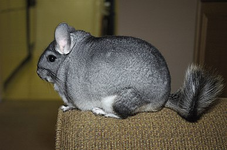
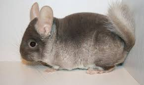

Психологія шиншил
Психологія шиншил є важливою для розуміння їхньої поведінки та забезпечення їм щасливого життя. Шиншили - соціальні, активні тварини, які потребують взаємодії та уваги. Вони можуть сильно прив'язуватися до своїх власників і проявляти емоції через звуки та поведінку. Тихий писк свідчить про задоволення, тоді як гучний писк або шипіння можуть вказувати на страх або незадоволення.
шиншили активні переважно вночі, важливо враховувати їхню потребу в нічній активності та створювати відповідні умови для цього. Вдень вони зазвичай відпочивають, тому краще не турбувати їх у цей час. Шиншили цінують простір і люблять просторі клітки з багатьма рівнями, де можуть стрибати і бігати. Забезпечення великої кількості іграшок та предметів для гризіння допоможе їм залишатися активними та задоволеними. Це також важливо для підтримки здоров'я зубів.
Чистоплотність є ще однією характерною рисою шиншил. Вони потребують регулярних пилових ванн для підтримання шерсті в доброму стані. Спостереження за тим, як шиншила приймає пилову ванну, може дати уявлення про її настрій та самопочуття. Активна участь у ваннах свідчить про добрий стан, тоді як уникання ванн може бути ознакою стресу чи хвороби.
Шиншили чутливі до змін в оточенні. Раптові зміни можуть викликати у них стрес, тому важливо підтримувати стабільність у їхньому житті. Якщо потрібно внести зміни, наприклад, перемістити клітку або додати нові предмети, робіть це поступово, щоб дати шиншилі час звикнути.
Агресія у шиншил зазвичай є відповіддю на страх або загрозу. В разі агресії важливо залишатися спокійним і не примушувати тварину до контакту, даючи їй час заспокоїтися. Потрібно зрозуміти, що викликало таку реакцію, і усунути цей фактор.
Для забезпечення психологічного комфорту шиншил важливо створити просторе і безпечне середовище для життя, регулярно взаємодіяти з ними, але поважати їхній особистий простір та час для відпочинку. Стабільний розпорядок дня, що включає час для ігор, відпочинку та харчування, допоможе їм почуватися спокійно. Увага до змін у поведінці вашої шиншили може сигналізувати про фізичні чи психологічні проблеми, які потрібно вчасно вирішувати.
Догляд
харчування шиншил
Сіно є основним і найважливішим продуктом харчування для шиншил. Воно має бути сухим і жорстким, щоб допомогти шиншилам уникнути проблем зі здоров'ям зубів і травлення. Шиншили повинні мати доступ до свіжого сіна протягом усього дня. Найкраще використовувати трав'яне сіно, приміром, люцерну або тимофіївку. Це допоможе надати шиншилам необхідну кількість клітковини, яка допомагає підтримувати здорове травлення та сточувати зуби. Також для сточування зубів слід розмістити в клітці спеціальний камінь і пропонувати шиншилі гілочки дерев. Улюбленці із задоволенням гризуть гілки:
• яблуні;
• груші;
• обліпихи;
• смородини;
• липи;
• шовковиці;
• горобини;
• берези тощо.
Зерновий корм для шиншил – це важливе джерело поживних речовин. Раціон повинен включати спеціальні суміші для шиншил, які можна купити у зоомагазинах. Зазвичай вони складаються з вівса, ячменю, пшениці, проса, гречки, кукурудзи та трав'яних гранул. Корм для шиншил повинен містити не менше 16-18% білка та не більше 2-3% жиру, а також вітаміни й мікроелементи: кальцій, фосфор, вітаміни А, С, групи В та D, залізо, цинк, селен, мідь. Вони допомагають підтримувати здоров'я кісток, шкіри та шерсті, а також імунної системи.
Корм для шиншил має бути свіжим і належним чином зберігатися, щоб уникнути зараження шкідливими бактеріями та пліснявою.
Соковитий корм можна давати тільки дорослим шиншилам, молодим звіряткам краще пропонувати лише сушені овочі та фрукти. Як добавку до раціону використовуйте сезонні фрукти, овочі та ягоди, що не містять нітратів та інших шкідливих речовин. Фахівці рекомендують пригощати шиншил:
• яблуками;
• грушами;
• гарбузом;
• морквою;
• селерою.
Деякі пухнасті гурмани віддають перевагу огіркам, кабачкам, солодкому перцю, ягодам шипшині та навіть бананам. Слідкуйте за самопочуттям улюбленця. Якщо у шиншили спостерігається пронос, запор, метеоризм, краще відмовитися від соковитих продуктів. Враховуйте, що вони є скоріше ласощами, ніж основним харчуванням, і не давайте їх улюбленцям занадто багато.
Нарешті, забезпечте свою шиншилу свіжою водою. Вони п'ють багато води, тому переконайтеся, що завжди мають доступ до неї.
догляд за шерстю
Пилові ванни: Шиншили регулярно потребують пилових ванн для догляду за своєю шерстю. Вони купаються в спеціальному пилі або піску, щоб видалити надлишок жиру та вологи і підтримувати свою шерсть здоровою та чистою. Пилові ванни слід надавати кілька разів на тиждень.
Щоденне чесання: Регулярне чесання шиншил також є важливою частиною догляду за їхньою шерстю. Це допомагає уникнути утворення клубків та забруднень у шерсті, а також сприяє збереженню її м'якості та блиску.
Здоровий раціон:
Чисте середовище: Важливо, щоб середовище, в якому живе ваша шиншила, було чистим і сухим. Уникайте перегрівання та вологи, що може спричинити забруднення шерсті та збільшити ризик виникнення захворювань.
Регулярні огляди: Проводьте регулярні огляди шерсті вашої шиншили, щоб виявляти будь-які зміни у її стані. Шерсть має бути густою, м'якою і без ознак забруднення або вологи.
Відвідування ветеринара: Якщо у вас виникають які-небудь сумніви або питання щодо здоров'я шерсті вашої шиншили, краще консультуватися з ветеринаром. Він зможе надати вам поради щодо догляду та лікування, якщо це необхідно.
Облаштування клітки
Що має бути у клітці шиншили? Для комфорту улюбленця вам знадобиться вкомплектувати клітку:
• будиночком;
• напувалкою;
• сінником;
• годівницями для соковитого корму та зернової суміші;
• іграшками, поличками, гамаками тощо;
• ванною;
• за бажанням – лотком.
У шиншили в клітці обов'язково має бути укриття, де улюбленець зможе спати, відпочивати, ховатися, коли йому хочеться відпочити від надмірної уваги або навколо забагато подразників. У продажу можна знайти найрізноманітніші будиночки із пластику, дерева, кераміки, шкаралупи кокосового горіха. Врахуйте, що всі будиночки, крім керамічних, улюбленець буде гризти й періодично вам доведеться оновлювати цей предмет інтер'єру.
Напувалку краще купувати краплинну - в ній вода довше залишається чистою. З миски шиншили п'ють неохоче, тому що вода там швидко забруднюється шматочками наповнювача, сіна та ін. Шиншили досить швидко вчаться пити з краплинної напувалки. Якщо ж вихованець не розуміє, що потрібно робити, піднесіть до напувалки палець, змочіть водою, а потім змастіть носик звірятка. Ще один спосіб привчити улюбленця до напувалки – змастити металевий кінчик фруктовим соком. Облизуючи напувалку, шиншила зрозуміє, що звідти тече вода і зможе напитися.
Близько 70% денного раціону шиншили складають трава й сіно. Щоб їжа не валялася по всій клітці, не бруднилася, не займала місце і завжди була «під лапкою» в пухнастика, подбайте про встановлення сінника. Так вам буде зручніше давати улюбленцеві корм, а шиншилі – простіше брати свіжу порцію їжі.
Оскільки крім сіна шиншили їдять зернову суміш та соковиті продукти, для них знадобляться окремі годівниці. Але чимало власників шиншил обмежуються однією – для зерна, а овочі, ягоди та фрукти дають вихованцю як ласощі під час спілкування чи прогулянки.
Для підтримки здоров'я, гарної фізичної форми та відмінного настрою шиншилам потрібно багато рухатися. Тому клітку для шиншил обов'язково слід обладнати «спортивними снарядами» для активного дозвілля. Підійде:
• бігове колесо;
• полиці;
• гамаки;
• гойдалки;
• тунелі;
• драбинки тощо.
Вибираючи ці аксесуари, звертайте увагу на розміри, вони не повинні бути занадто маленькими, а також на матеріали.
Купання – процедура, без якої шиншила просто жити не може. Це одночасно розвага, догляд за хутором та зняття стресу. Шиншили не купаються у воді, вони чистять шубку у спеціальному дрібному піску (купити пісок для шиншил ви можете у магазині «Мастерзоо» за дуже доступною ціною). Щоб улюбленцю було зручно, а пісок не розлітався по всій кімнаті, потрібно придбати спеціальну ванну і рази 2-3 на тиждень надавати шиншилі можливість перекидатися в піску. Зазвичай для повного щастя вихованцю достатньо 20-30 хвилин у ванні. Після «лазневих процедур» хутро стає пухнастим, пишним і м'яким.
Шиншили - дуже охайні улюбленці. Від них немає ніякого запаху, екскременти їхні сухі, не бруднять піддон і теж практично без запаху, проте міняти наповнювач у клітці потрібно не рідше одного разу на 5-7 днів. Однак деяких улюбленців вдається привчити справляти потребу в лоток. Міняти наповнювач у лотку доведеться щодня, але повністю замінювати підстилку в клітці буде достатньо раз на 2-3 тижні.
Хвороби
Перша та найбільш поширена проблема, з якою стикаються власники шиншил, – це захворювання шкіри. Це може бути викликано паразитами, такими як блохи або кліщі, або алергічною реакцією на корм або засоби для догляду за вовною. Спостереження за вовною вашої шиншили і регулярний огляд шкіри можуть допомогти виявити будь-які проблеми в ранньому можливому етапі.
Дуже важливо також стежити за станом зубів шиншили, оскільки у них зростання зубів. Вони можуть страждати від зубного нальоту, що може призвести до різних проблем, включаючи біль у роті або відмову від їжі. Регулярна перевірка ротової порожнини та надання шиншилі жувальних предметів може допомогти запобігти цим проблемам.
| Захворювання | Симптоми | Лікування |
|---|---|---|
| Респіраторна інфекція | Кашель, чхання, нежить, дихальні проблеми | Перетримка у теплому приміщенні, підтримання чистоти, дача противірусних препаратів |
| Харчове отруєння | Блювота, пронос, відмова від їжі, слабкість | Видалення джерела харчового отруєння, відновлення рівноваги води та електролітів, за необхідності проколоти антибіотики |
| Мікози (грибкові інфекції) | Висипання на шкірі, свербіж, ломота в поведінці | Застосування антигрибкових препаратів під наглядом ветеринара, підтримка гігієни клітини та вовни |
породи
довгохвоста шиншила
Довгохвоста шиншила, або шиншила ланігера, відрізняється своїм довшим і більш граціозним хвостом, який робить її ще елегантнішою. Вона має подовжену морду і довші кінцівки, що роблять її трошки більшою за куцохвосту сородичку.
куцохвоста шиншила
Куцохвоста шиншила, також відома як шиншила болівіанська, це миленька тваринка з компактним тілом і коротким, примітним хвостом. Вона має кругле обличчя з великими очима і пухнастими вушками, що надають їй невимушеного та привабливого вигляду.